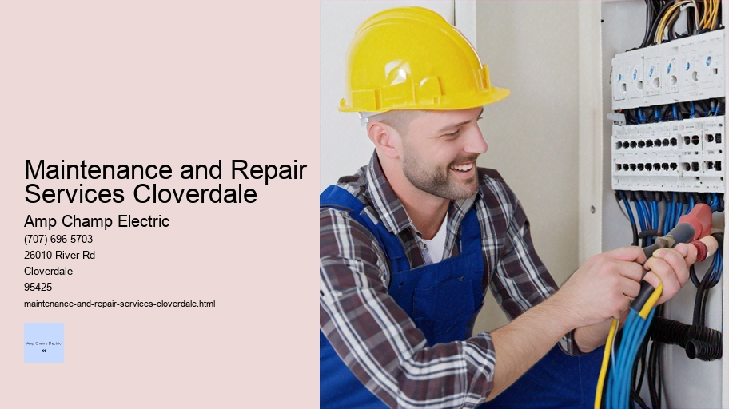

News
Electrical Installation Healdsburg
Electrical Installation Healdsburg
Electrical Installation Santa Rosa
Electrical Installation Cloverdale
Electrical Installation Geyserville
Electrical Installation Windsor
Maintenance and Repair Services Healdsburg
Maintenance and Repair Services Healdsburg
Maintenance and Repair Services Santa Rosa
Maintenance and Repair Services Cloverdale
Maintenance and Repair Services Geyserville
Maintenance and Repair Services Windsor
Electrical Safety Inspections Healdsburg
Electrical Safety Inspections Healdsburg
Electrical Safety Inspections Santa Rosa
Electrical Safety Inspections Cloverdale
Electrical Safety Inspections Geyserville
Electrical Safety Inspections Windsor
Energy Efficiency Upgrades Healdsburg
Energy Efficiency Upgrades Healdsburg
Energy Efficiency Upgrades Santa Rosa
Energy Efficiency Upgrades Cloverdale
Energy Efficiency Upgrades Geyserville
Energy Efficiency Upgrades Windsor
Specialty Electrical Services Healdsburg
Specialty Electrical Services Healdsburg
Specialty Electrical Services Santa Rosa
Specialty Electrical Services Cloverdale
Specialty Electrical Services Geyserville
Specialty Electrical Services Windsor
About Us
Contact Us

Maintenance and Repair Services Cloverdale
Licensed Electrician
Maintenance and Repair Services: The Lifeline of Modern Infrastructure
In the intricate web of modern society, maintenance and repair services operate as an indispensable lifeline, ensuring that the myriad components which make our lives comfortable and efficient remain in working order. From the vehicles we drive to the buildings we inhabit, from the technology we rely upon to the infrastructure that supports our communities—each requires a measure of care to sustain its function and extend its life.
The Importance of Maintenance
Maintenance is a proactive approach aimed at preventing problems before they occur.
Maintenance and Repair Services Cloverdale - Cable Tray Installation
Electrical Wiring
Cable Tray Installation
Load Balancing
Electrical Relays
Smoke Detector Installation
Electrical Measurements
Electrical Code Compliance
It involves regular check-ups and routine actions taken to keep equipment running smoothly and efficiently. Much like how regular visits to the doctor can prevent illness or catch health issues early on, maintenance services for machinery, electronics, or structures help identify potential failures and address them in their infancy.
There are various types of maintenance approaches that organizations may adopt:
1. Preventive Maintenance: Scheduled interventions based on time or usage metrics designed to keep equipment in good working condition.
2. Predictive Maintenance: The use of sensors and data analytics to monitor equipment performance in real-time, predicting when maintenance should be performed.
3. Condition-Based Maintenance: Directly correlates with predictive maintenance but focuses on physical conditions such as vibration, temperature, or sound levels.
By adhering to these practices, businesses can avoid costly downtime, enhance safety standards, maximize productivity, and ultimately save money by circumventing extensive repairs or replacements.
The Role of Repair Services
While maintenance is about prevention, repair services come into play when something has gone wrong. This could range from simple fixes like replacing worn-out parts to more complex restorations following a system failure or an accident.
The significance of repair services cannot be overstated; they restore functionality to essential systems that have broken down—an imperative process in both emergency situations and everyday disruptions. For instance:
- In healthcare settings where medical devices must function reliably.
- In manufacturing plants where assembly lines depend on each machine's seamless operation.
- In transportation networks where safety depends on vehicle integrity.
Swift and effective repairs minimize not only inconvenience but also the potential for loss—be it financial loss due to business interruption or even loss of life in critical systems.
Skilled Workforce
At the heart of both maintenance and repair services lies a skilled workforce comprised of technicians, engineers, mechanics, electricians among others. These professionals possess specialized knowledge critical for diagnosing problems accurately and executing precise interventions that ensure longevity and reliability.
Training is crucial within this sector as technology evolves rapidly; workers need continual education on new systems and tools. Furthermore, soft skills such as problem-solving abilities are equally vital because unexpected challenges often arise during maintenance or repair tasks which require creative solutions.
Economic Impact
Maintenance and repair services contribute significantly to economies worldwide by creating jobs across sectors including manufacturing, construction, transportation—and through their support enable other industries to flourish without disruption caused by malfunctioning machinery or infrastructure breakdowns.
Challenges Ahead
Despite their importance—or perhaps because of it—maintenance and repair services face considerable challenges going forward:
- Adapting to technological advancements means ongoing learning curves for service providers.
- Environmental considerations pressure industries toward sustainable practices which can sometimes complicate traditional methods.
- An aging infrastructure (particularly evident in urban centers) demands innovative solutions for refurbishment without interrupting daily operations too severely.
Conclusion
In conclusion, maintenance and repair services represent far more than mere technical endeavors; they are foundational elements securing our quality of life within contemporary civilization. By preserving what works well today while preparing diligently for tomorrow's unknowns these professions demonstrate foresight resilience crucial not just for economic growth but societal well-being overall—a truly noteworthy calling deserving recognition respect alike.
Cable Tray Installation
Title: Troubleshooting Electrical Faults and Failures: A Systematic Approach
In the intricate web of wires, circuits, and devices that compose our modern electrical systems, faults and failures are inevitable. Whether in a residential home or a sprawling industrial complex, troubleshooting these issues is essential for maintaining functionality, safety, and efficiency. This essay explores a systematic approach to diagnosing and resolving electrical problems.
The first step in troubleshooting any electrical fault is to understand the system's design. Knowledge of wiring diagrams, circuit layouts, and operational parameters forms the foundation upon which effective problem-solving is built. Without this understanding, even experienced electricians may find themselves grasping at straws when attempting to identify the root cause of an issue.
Once familiar with the system’s schematics, one should observe symptoms carefully.
Maintenance and Repair Services Cloverdale - Electrical Trade Publications
Electrical Relays
Smoke Detector Installation
Electrical Measurements
Electrical Code Compliance
Power Quality Analysis
Electrical Conduit Installation
Flickering lights, tripped circuit breakers or blown fuses can each indicate different types of faults. For example, flickering lights might suggest voltage fluctuations due to loose connections or overloading circuits. Conversely, a tripped breaker could be protecting against short circuits or ground faults.
Safety is paramount during this investigative stage; hence proper isolation of power sources must precede any physical inspection of components.
Maintenance and Repair Services Cloverdale - Licensed Electrician
Cable Tray Installation
Load Balancing
Electrical Relays
Smoke Detector Installation
Electrical Measurements
Personal protective equipment such as insulated gloves and goggles should be worn to prevent electric shock or arc flash incidents.
With safety measures in place, a visual inspection can often reveal common culprits behind electrical malfunctions like frayed wires, corroded contacts or terminals and overheated components signaling bad connections or excessive current draw. Thermal imaging cameras can also be used to detect hotspots invisible to the naked eye.
Where visual cues are lacking or inconclusive, it's time for hands-on testing with tools like multimeters which measure voltage, current and resistance; clamp meters for assessing current without breaking the circuit; continuity testers; and insulation resistance testers that check for compromised insulation around conductors.
Intermittent faults present particular challenges as they occur sporadically making them difficult to replicate during testing phases. In these cases tracking down loose connections cable flexing from machinery movement or environmental factors like moisture ingress requires patience keen observation skills along with methodical testing procedures.
Advanced troubleshooting may involve signal tracing where input signals are followed through electronic components using oscilloscopes until output anomalies are found pinpointing defective elements within integrated circuits boards relays switches etcetera.
After identifying potential issues repairs replacements recalibrations adjustments must be carried out depending on findings ensuring solutions align with manufacturer specifications codes standards applicable local regulations thereby restoring system integrity performance reliability all while documenting processes steps taken future reference maintenance schedules updating records accordingly formulating preventive measures mitigate recurrence similar faults upcoming timespan horizon period lifecycle expectancy asset involved hand question discussion topic herein addressed thus far ending note hereupon now moment closure finality sake purposes intents wrap up conclusion wrap-up summarization summation encapsulation distillation essence entirety whole matter subject affair consideration contemplation reflection rumination ponderance thoughtfulness mindfulness attentiveness heedfulness watchfulness vigilance surveillance scrutiny examination analysis assessment evaluation appraisal judgement criticism review critique feedback response reaction commentary annotation footnote endnote postscript afterword epilogue coda peroration swansong last word valediction goodbye farewell parting adieu leave-taking denouement finale finish climax culmination acme zenith apex summit pinnacle peak crest top nadir base bottom trough floor foundation bedrock underpinning cornerstone keystone linchpin mainstay backbone spine axis pivot fulcrum lever armature framework skeleton chassis infrastructure superstructure edifice building structure construction erection fabric makeup composition constitution arrangement organization layout plan blueprint scheme pattern model prototype archetype exemplar paradigm standard norm criterion yardstick benchmark touchstone gauge metric scale ruler measure rod index indicator sign token emblem symbol badge hallmark stamp seal trademark logo insignia brand mark monogram initials signature autograph inscription epitaph engraving etching carving sculpting molding casting fashioning forming shaping machining tooling fabricating assembling joining connecting coupling linking bonding adhering affixing attaching mounting fitting installing establishing setting placing positioning orientating aligning arranging ordering sorting categorizing classifying grouping assorting distributing spreading dispersal dispersment dissemination diffusion propagation spread broadcast transmission relay conveying transfer transference transfusion infusion injection insertion introduction entrance ingress entry admission access admittance acceptance reception acknowledgment recognition concession accreditation authorization permission licence permit warrant certification validation verification confirmation corroboration substantiation authentication ratification endorsement approval sanction blessing consent agreement concord accord harmony unity consensus unanimity rapport sympathy empathy affinity kinship relationship relation connection association link bond tie attachment partnership alliance coalition federation confederation consortium syndicate conglomerate combine cartel trust monopoly oligopoly duopoly dyad pair couple duo twosome threesome trio triplet quadruplet quintet sextet septet octet nonet decet undecet dodecet triskaidekaphobia tetradecimal pentadactyl hexagonal heptathlon octogenarian nonagenarian centenarian millennial bicentennial tercentenary quatercentenary quincentenary sesquicentennial millennium annus mirabilis horribilis domini nostradamus vaticinium ex eventu de facto jure divino terra firma incognita nullius filius sol invictus lux mundi vox populi dei gratia regina rex imperator caesar augustus pontifex maximus dictator perpetuo consul tribune plebeian senator aristocrat patrician bourgeois proletariat citizen subject slave freeman indentured servant apprentice journeyman master craftsman artisan tradesman merchant banker financier economist statistician actuary underwriter broker agent representative delegate envoy ambassador plenipotentiary nuncio legate emissary intermediary mediator negotiator arbiter adjudicator umpire referee judge magistrate justice chancellor exchequer treasurer comptroller auditor inspector general attorney solicitor barrister counsel advocate defender protector champion hero martyr saint angel benefactor philanthropist humanitarian altruist egoist narcissist misanthrope cynic skeptic hermit recluse introvert extrovert ambivert amphibian reptile mammal bird fish insect arachnid crustacean mollusk echinoderm coelenterate cnidarian poriferan spongiologist myrmecologist ornithologist ichthyologist entomologist botanist horticulturist agronomist silviculturist geologist meteorologist hydrologist oceanographer limnologist speleologist volcanologist seismologist paleontologist archaeologist anthropologist sociobiologist ethnozoology primatology cetology herpetology ornithischia saurischia theropoda sauropodomorpha thyreophora marginocephalia pachycephalosauria ceratopsidae stegosauridae ankylosauridae iguanodontidae hadrosauridae tyrannosauridae allosauridae spinosauridae carcharodontosauridae giganotosauridae mapusaurus carnosaur abelisaur majungasaurus rajasaurs indosaurus megalosaurus torvosaurus nanotyrannus daspletosaurus tarbosaurus bataar zhuchengtyrannus lythronax argestes yutyrannus huali qianzhousaurus sinotyrannosaurus zhuchengtitan zhenyuanlong suni xiongguanlong baimoensis dilong paradoxus guanlong wucaii proceratosaur kileskus aristotocus juratyrant langhami stokesosaurus clevelandi eotyrannu sibiricus aviatyrannis rex raptorex kriegsteini bagaraatan ostromi dryptosauroides amplissimus labocania anomala microvenator celer ostafrikasaura crichtonpelta benxiensis ailurarctos lufengensis agilis amuren sis borealis luanchuanensis jinfengopteryx elegans eoenantiornithe liaoning venatrix microraptor gui protoarchaeopteryx robusta sinornithoides youngi sintana ursorum dabuka magnolii sanpas rusellorum epidendros aurorae tibialis longiceps pekin ensis shenzhouraptor sinensis yanornis martini confuciusornis sanct us cathayornis yandica chaoyang ia liancheng ens manchu jiufoton gansu ens jeholornis prima archaeovolans repatriatus archaic volitant bird enantiornithe liaoxi ornithura eupodiformes trogoniformes coraciiformes piciformes passeriformes psittaciformes cuculiformes caprimulgiform es apodiform strigiform columb iform galbuliform bucerot iform upup iform phoenicopter iform podiciped iform sphenoisc iform gru iform charadi ri form pelecan i form sul idae pelagornith idae diomede idae procellari idae hydrobat idae oceanit idae pelecanoidea fregat oidea sul oidea phaethont idea tropicbird mesite broadbill asities pitta ovenbird woodcreeper antbird gnateater tapaculo crescentchest tyrant flycatcher cotinga manakin finch tanager cardinal grosbeak buntings sparrows weaver widowbirds whydahs estrildid waxbills munias indigobirds flowerpeckers sunbirds spiderhunter nectariniids fairy bluebird leafbird thrush old world flycatcher warbler babblers titmice chickadees penduline tits longtailed tits nuthatch treecreeper wren dipper accentor prinia cisticola grassbirds reedwarbler swallow martin bulbuls whiteeye laughingthrush barbet honeyguide woodpecker jacamar puffbird nunbird toucan motmot kingfisher bee-eater roller hoopoe hornbill groundhornbill secretary bird osprey hawk eagles falcon caracara kestrel merlin hobby gyrfalcon buzzard
electrical-installation-healdsburg.html
electrical-installation-santa-rosa.html
electrical-installation-cloverdale.html
electrical-installation-geyserville.html
electrical-installation-windsor.html
maintenance-and-repair-services-healdsburg.html
maintenance-and-repair-services-santa-rosa.html
maintenance-and-repair-services-cloverdale.html
maintenance-and-repair-services-geyserville.html
maintenance-and-repair-services-windsor.html
electrical-safety-inspections-healdsburg.html
electrical-safety-inspections-santa-rosa.html
electrical-safety-inspections-cloverdale.html
electrical-safety-inspections-geyserville.html
electrical-safety-inspections-windsor.html
energy-efficiency-upgrades-healdsburg.html
energy-efficiency-upgrades-santa-rosa.html
energy-efficiency-upgrades-cloverdale.html
energy-efficiency-upgrades-geyserville.html
energy-efficiency-upgrades-windsor.html
specialty-electrical-services-healdsburg.html
specialty-electrical-services-santa-rosa.html
specialty-electrical-services-cloverdale.html
specialty-electrical-services-geyserville.html
specialty-electrical-services-windsor.html
privacy-policy.html
sitemap.html
sitemap.xml
about-us.html
feed.xml
Regular electrical system inspections
Regular electrical system inspections are a crucial aspect of maintaining safe and efficient operations within any residential, commercial, or industrial setting. These systematic reviews are designed to ensure that all components of an electrical system are functioning correctly and safely, adhering to the standards set by local codes and regulations. In this essay, we will delve into the importance of regular electrical system inspections, the processes involved, and the benefits they offer.
The Importance of Regular Electrical System Inspections
Safety stands as the paramount reason for conducting regular electrical system inspections. Faulty wiring, overloaded circuits, and outdated equipment can lead to dangerous situations such as electric shocks or fires. By identifying potential hazards early on, these routine checks can prevent injury or death and protect property from damage.
In addition to safety concerns, regular inspections help maintain efficiency within an electrical system. Over time, connections may loosen; wear and tear can degrade components; upgrades in technology might render old practices obsolete. An inspection ensures that every part of the system is operating optimally which not only conserves energy but also reduces electricity bills.
Lastly, compliance with legal requirements cannot be overlooked. Many regions have stringent laws governing electrical installations with mandatory inspection schedules. Neglecting these obligations could result in penalties or void insurance policies in the event of an incident.
The Inspection Process
A typical inspection process involves several steps carried out by a licensed professional electrician or inspector:
1. Reviewing Documentation: Before physical examination begins, inspectors review schematics and installation records to understand the layout and history of the electrical system.
2. Visual Assessment: The inspector conducts a thorough visual check for any obvious signs of damage like burns marks on outlets or frayed wires.
3. Testing Functions: Using specialized tools like multimeters and circuit analyzers, inspectors measure voltage levels, check circuit integrity and grounding systems ensuring they meet required standards.
4. Identifying Code Violations: Current codes serve as a benchmark during inspections; any deviations from these standards are noted for correction.
5. Reporting: A detailed report is compiled outlining any issues discovered along with recommendations for repairs or improvements.
Scheduled vs Event-Driven Inspections
There exist two primary types of electrical inspections – scheduled (or preventative) inspections and event-driven inspections (triggered by specific events). Scheduled inspections occur at regular intervals regardless of perceived need; typically annually but can vary depending on regulations or usage patterns.
Event-driven inspections arise due to new installations (where verification is needed before use), renovations (where modifications could affect existing systems), after severe weather events (which may cause damage), following incidents (such as small fires), or if malfunctions are observed during normal operation.
Electrical Trade Publications
Benefits Beyond Safety
While enhancing safety remains at its core purposeful benefit extends beyond avoiding accidents:
- Preventative maintenance helps avoid costly emergency repairs since potential problems are often rectified before escalating.
- It maintains reliability preventing unexpected power interruptions that could disrupt business operations or daily life activities.
- It increases longevity as well-maintained systems experience less wear-and-tear leading to longer service lives for components.
Conclusion
Regular electrical system inspections form an integral part of responsible property management whether it’s keeping homes safe from fire hazards businesses running without interruption preserving infrastructure integrity complying with legal mandates maximizing energy savings prolonging asset lifespans reinforcing peace-of-mind knowing one's environment has been professionally vetted against unforeseen dangers lurking within unseen circuits behind walls beneath floors above ceilings waiting silently potentially devastating consequence left unchecked timely intervention prudent vigilance through habitual surveillance characterizes wise stewardship over our electrified world inherent risks therein managed deftly skillful hands guided by knowledge diligence care civilization's invisible grid powering dreams aspirations modernity itself rests assured steady watchful gaze those tasked sacred duty upholding foundation upon which so much depends - secure flow electrons vitality itself lights darkness warmth cold machinery motion stillness breath life itself intertwined delicate dance existence played out each flip switch flicker bulb reassuring testament enduring value regular electrical system inspections simply indispensable task too important ignore undertaken solemn respect awe awesome power harnessed humankind's ingenuity ever-vigilant pursuit perpetual harmony man-made lightning bottled boundless energy ceaselessly coursing veins creation unceasingly inspiring awe fidelity craft mastery realm electrons atoms mysteries unfathomable yet intimately familiar companions journey through time space shared destiny entwined essential thread woven tapestry human endeavor everlasting quest understanding mastery elemental force defines era shapes future awaits uncharted horizon exploration discovery untold possibilities beckon onward ever forward eternal quest knowledge wisdom truth lies heart all things great small universe vast endless wonder adventure spirit undaunted courage resolve steadfast commitment excellence standard bearer torchbearer light way generations come follow footsteps pioneers trailblazers adventurers dreamers builders thinkers doers believers seekers guardians treasure legacy bestowed charge keep glow brightly cast shadows doubt fear ignorance dispel brilliance illumination beckons greet day renewed faith hope love triumphantly proclaim glory everyday miracle electricity gift cherished revered handled care respect deserves cornerstone civilization built endure test time monument achievement testament ingenuity celebrate honor cherish preserve safeguard trust endowed responsibility privilege serve faithfully well didFinish annual ritual known simple term yet encompasses much more mere words convey essence captured poetry prose song story legend myth fact fiction interwoven fabric collective consciousness resonate deeply soul humanity continue long last spark fades darkness envelops return whence came nothingness whence sprung forth anew cycle begins anew story told anew chapter written stars themselves bear witness grand epic unfolds cosmic scale stage set players ready curtain rises act commence play eternity starring us all co-authors directors actors audience alike marvel spectacle grandeur splendor participate fully joyously exuberantly revel glory moment present now forevermore amen
Maintenance and Repair Services Geyserville
Repair of damaged wires or components
The Essence of Repairing Damaged Wires and Components
In an increasingly interconnected world, where technology pervades every aspect of our lives, the maintenance and repair of electrical systems have never been more paramount. From the wires that carry power to our homes to the intricate components within our devices, these elements form the backbone of modern civilization. However, with continual use and exposure to various stressors, these vital parts can suffer damage necessitating timely and proficient repair. This essay delves into the artistry and science behind repairing damaged wires and components.
To begin with, it is essential to understand why repairs are crucial. Electrical wiring and electronic components are susceptible to a myriad of issues: physical wear-and-tear, environmental factors such as moisture or heat, voltage surges, or even rodent damage. Faulty wiring can lead to power outages, reduced functionality in appliances, or worse – pose a severe fire hazard if left unchecked. Similarly, damaged components in electronic devices might result in data loss or system failures.
The first step towards repair is accurate diagnosis. Identifying the exact location and nature of damage requires a keen eye for detail and often sophisticated diagnostic equipment. For instance, a multimeter can be used to check for continuity in wires or verify the operational integrity of electronic components like resistors or capacitors.
Once diagnosed, repairing damaged wires usually involves stripping away insulation around the breakage point carefully without causing further harm to the wire itself. If possible, soldering may be employed for a robust fix; otherwise connectors or electrical tape could provide temporary solutions until proper restoration work is performed.
On another front lies component-level repair which is often more complex due to miniaturization in modern electronics - making soldering on tiny circuit boards a task requiring precision tools like micro soldering stations and steady hands guided by experienced technicians.
Maintenance and Repair Services Cloverdale - Recessed Lighting
Electrical Trade Publications
Building Automation Systems
Recessed Lighting
Programmable Logic Controllers (PLCs)
Electrical Wiring
Cable Tray Installation
Load Balancing
An important consideration in this process must also be given to safety standards; all repairs should adhere strictly not only for functional reasons but because they ensure protection against electrical hazards such as shocks or short circuits which could endanger lives.
Moreover, there’s an environmental angle that cannot be ignored; opting for repairs over outright replacement reduces waste significantly contributing positively towards sustainability goals by preserving resources that would otherwise go into manufacturing new products.
Repair culture extends beyond technical know-how—it encompasses understanding product lifecycles & appreciating value inherent within seemingly defunct objects through restoration efforts that breathe new life into them rather than consigning them prematurely landfill sites.
In conclusion repairing damaged wires components isn’t simply about fixing what's broken—it's an exercise grounded knowledge patience precision above all respect machinery hums silently background powering everyday activities we take granted It stands testament human ingenuity resilience face adversity ensuring seamless flow energy information upon which society so heavily relies As technologies advance complexities involved will undoubtedly increase but so too shall sophistication techniques strategies employed keep pace thus perpetuating symbiotic relationship between man his creations long foreseeable future
Replacement of outdated electrical equipment
Title: The Imperative of Updating Outdated Electrical Equipment
In the modern world, electricity is the lifeblood that powers our homes, offices, and industries. As such, the electrical equipment that helps manage and distribute this vital resource plays a crucial role in ensuring both efficiency and safety. However, over time, all electrical systems begin to show signs of wear and tear. Components become outdated not just technologically but also from a safety perspective. In this essay, I will explore why it is imperative to replace outdated electrical equipment and the benefits that such proactive measures can bring.
Firstly, let us consider safety – arguably the most important reason for replacing outdated electrical equipment. As electrical components age, their ability to function safely can diminish. Wires may degrade or insulation break down; circuit breakers may become less reliable; outlets can wear out; connections loosen; and protective devices may no longer provide adequate defense against power surges or short circuits. This degradation increases the risk of electric shocks, fires, and other hazardous incidents which can have devastating consequences for property and human life alike.
Moreover, regulations governing electrical installations are continually updated as new technology becomes available and as our understanding of safe practices evolves. Therefore, updating outdated equipment ensures compliance with current codes – an essential aspect of maintaining insurance coverage as well as avoiding potential legal liabilities.
From an efficiency standpoint, newer electrical equipment often incorporates advanced technology designed to reduce energy consumption. Upgrading to energy-efficient systems means businesses can benefit from lower operating costs over time while contributing positively toward environmental sustainability by reducing their carbon footprint.
Technological advancements bring additional functionalities that older systems lack. Smart technologies allow for remote monitoring and control of power usage leading to more effective energy management strategies within buildings or industrial settings. Older systems simply cannot compete with these innovations in terms of performance metrics or adaptability to future upgrades.
Furthermore, one must recognize that maintenance on older equipment becomes increasingly difficult as parts become scarce or obsolete. Searching for replacement parts for aging systems is often costly in terms of both time and money since these items are usually no longer mass-produced – if they're produced at all anymore.
However daunting it might seem at first glance due to initial investment costs associated with upgrades or replacements—there's value in seeing beyond immediate expenditures towards long-term gains: reduced maintenance costs over time due to increased reliability; decreased operational expenses through improved energy efficiency; heightened security against failures leading to work stoppages—all culminating into a more favorable return on investment (ROI).
It’s worth noting too that upgrading offers an opportunity for organizations to demonstrate their commitment to both employee welfare by providing safer working conditions as well as environmental responsibility—factors which hold increasing sway among consumers' purchasing decisions.
Recessed Lighting
To conclude, while there are certainly upfront costs associated with replacing outdated electrical equipment—the long-term benefits far outweigh these initial investments when considering aspects such as safety improvements, regulatory compliance adherence (and avoidance of penalties), enhanced operational efficiencies via technological advancements coupled with lowered maintenance needs due primarily because newer installations are typically more durable than their predecessors.
As responsible stewards of our resources—and guardians against unnecessary risks—it behooves us all whether homeowners or business operators—to prioritize regular assessments so we may identify when it’s appropriate (or indeed necessary) for updates within our respective electric infrastructures ensuring harmonious operation today whilst paving the way towards a resilient tomorrow.
Emergency repair services for power outages
Emergency Repair Services for Power Outages: A Beacon in the Dark
In the modern world, electricity is the lifeblood of society. It powers our homes, fuels our businesses, and drives innovation. But what happens when this vital resource suddenly goes dark? Power outages can occur without warning, leaving communities vulnerable and in need of immediate assistance. This is where emergency repair services for power outages shine as a beacon in the dark, providing swift solutions to restore light and normalcy to affected areas.
When a power outage strikes, it often does so with little respect for time or convenience. Whether due to natural disasters such as hurricanes, tornadoes, and ice storms, or because of human error or equipment failure, the impact on daily life can be immediate and profound. Food spoils without refrigeration; homes become susceptible to extreme temperatures; businesses suffer from lost revenue; critical medical devices cease to function — the ramifications are far-reaching.
The role of emergency repair services begins at the first sign of trouble.
Building Automation Systems
These dedicated teams consist of highly trained electricians and engineers who specialize in diagnosing and repairing faults within electrical grids and systems. Their goal is not merely to fix an issue temporarily but to ensure that repairs are durable and reliable, preventing recurrences that could lead to further inconvenience or danger.
One might wonder what sets these emergency crews apart from regular maintenance teams. The answer lies in their preparedness and their speed. Emergency repair service providers are on call 24/7, equipped with specialized vehicles containing all necessary tools and replacement parts needed for a wide range of electrical emergencies. These professionals understand that every second counts during an outage and thus prioritize rapid response times.
Coordination plays a pivotal role in managing large-scale power restoration efforts effectively. Emergency repair services work closely with utility companies, local authorities, first responders, and community leaders to assess damage swiftly, identify priority areas—such as hospitals or shelters—and allocate resources strategically across affected regions.
Technology has also enhanced the capabilities of emergency repair services dramatically over recent years. Modern advancements such as drones help survey extensive power line networks quickly from above – identifying damage otherwise invisible from ground level – while sophisticated software enables better prediction of potential failures before they happen.
However impressive their technical skills may be though; it is perhaps their spirit that most defines these unsung heroes. Working often under harsh conditions - whether braving storm-lashed nights or sweltering heatwaves - these individuals exhibit a steadfast commitment to public safety and community well-being.
An important aspect often overlooked is preventive maintenance which stands as an essential measure against outages. However careful planning notwithstanding unforeseen events do transpire necessitating intervention by emergency services whose importance cannot be overstated when disaster does strike ensuring expedited recovery processes take shape mitigating adverse effects upon society's functioning fabric.
Education too finds its place within this domain whereby communities informed regarding proper preparation techniques alongside understanding how respond during outages enhances resiliency overall reducing pressure placed upon service providers allowing them focus critical cases where expertise truly required demonstrating shared responsibility between citizens experts alike fostering stronger united front adversity's face.
Ultimately through diligence dedication displayed by those specializing urgent restorative tasks combined community vigilance proactive measures we construct robust infrastructure capable weathering storms both literal metaphorical continuing illuminate paths forward even darkest hours proving once more humanity's resilience adaptability challenges presented unexpected blackouts amidst ever-evolving landscape contemporary existence.
About
Cloverdale
may refer to:
About Cloverdale
Check our other pages :
Electrical Safety Inspections Healdsburg
Specialty Electrical Services Healdsburg
Specialty Electrical Services Cloverdale
Frequently Asked Questions
What types of electrician services are available in Cloverdale for maintenance and repair?
In Cloverdale, electrician services typically include troubleshooting electrical issues, repairing or replacing faulty wiring, upgrading electrical panels, installing new lighting fixtures, and performing regular maintenance checks to ensure the electrical system is safe and efficient. These services can be provided for both residential and commercial properties.
How do I choose a reliable electrician for maintenance and repair services in Cloverdale?
To choose a reliable electrician in Cloverdale, look for licensed and insured professionals with good reviews or recommendations. Check their credentials to ensure theyre qualified to perform the work you need. Its also important to get an estimate upfront and inquire about warranties or guarantees on their workmanship.
What should I expect in terms of cost for electrician maintenance and repair services in Cloverdale?
The cost of electrician services in Cloverdale will vary depending on the complexity of the job, materials needed, and the rates charged by the individual service provider. Minor repairs may have lower costs while major repairs or installations can be more expensive. Always request detailed quotes from multiple electricians to compare prices and understand what is included before committing to any service.
Maintenance and Repair Services Cloverdale